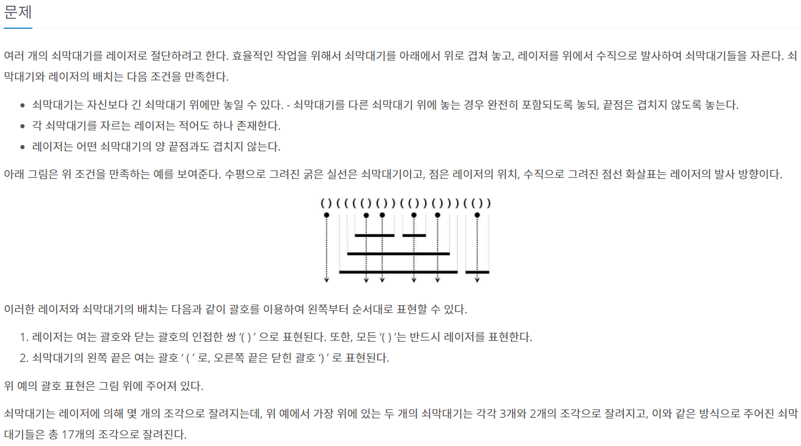
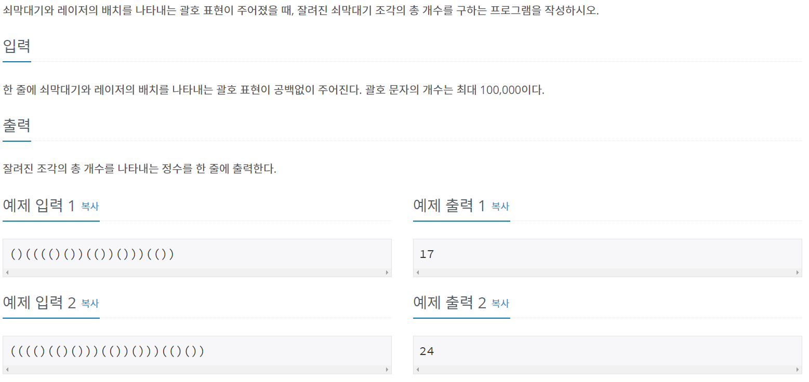
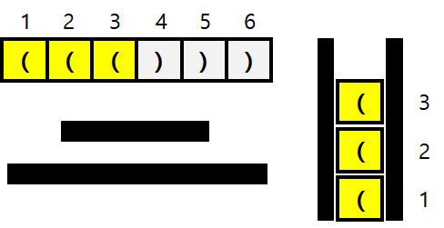
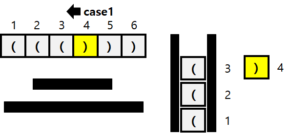
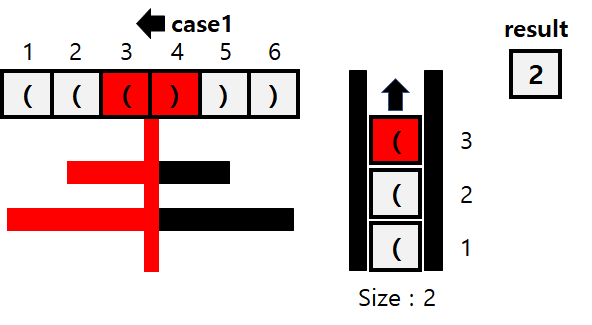
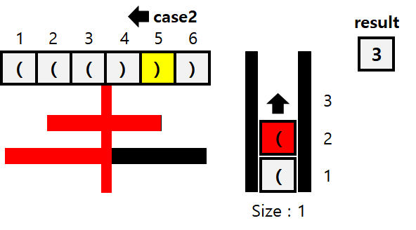
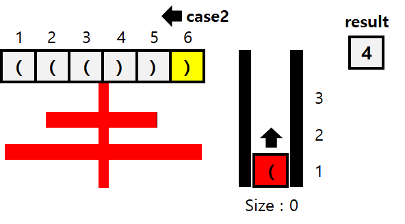
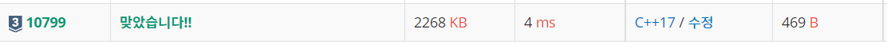

#INFO
난이도 : SILVER3
알고리즘 유형 : 자료구조.STACK(스택)
∞ 문제 출처 : https://www.acmicpc.net/problem/10799
 
#SOLVE
BOJ 9012 괄호 문제와 유사한 문제이다. 9012번이랑 다른 점이라면, 레이저라는 조건이 추가 되었다는 것이다.
입력받은 문자열 중, 왼쪽 괄호 "("는 모두 스택에 넣어주고, 오른쪽 괄호 ")"가 나오면 상황에 따라서 레이저인지 쇠막대기의 끝인지 판단하면 된다.
CASE1 오른쪽 괄호 ")" 앞의 문자가 왼쪽 괄호 "(" 이라면 , 레이저이다. 왜냐하면 문제 조건에서 모든 '( )' 는 반드시 레이저를 표현한다고 제시했기 때문이다. 따라서 먼저 스택.pop()을 해준 뒤 , 스택에 들어있는 원소의 수를 결과 값에 더해준다.
CASE2 오른쪽 괄호 ")" 앞의 문자가 오른쪽 괄호 ")" 이라면 쇠 막대기의 끝이다. 따라서, 결과 값에 1을 더해준다.
((())) 문자열을 예시로 들어 설명 하도록 하겠다.
1~3 은 모두 왼쪽 괄호 이기에, 스택에 넣어준다.

4는 오른쪽 괄호이며, 앞의 문자가 왼쪽 괄호인 CASE1 이기에, 레이저이다.

따라서 우선 스택의 가장 위에 있는 원소를 pop 해준다. 다음으로 스택에 남은 원소의 개수 2 (레이저 기준 왼쪽 막대기) 를 결과값에 더해준다.

5또한 오른쪽 괄호이다. 5의 앞의 문자는 오른쪽 괄호 이기에, CASE2이다. 따라서 쇠막대기의 끝 이기에 스택을 하나 pop() 해준 뒤, result값을 1 더한다. ( 1번째 라인의 오른쪽 조각 )

마지막으로 6은 5와 같은 CASE2 이다. 따라서 스택을 pop() 해주고, result에 1을 더한다. ( 2번째 라인의 오른쪽 조각)

#CODE
#include <iostream>
#include <string>
#include <stack>
using namespace std;
int main()
{
int ans = 0;
string str;
cin >> str;
stack <char> stk;
for (int i = 0 ; i < str.size() ; ++i)
{
if (str[i] == '(')
{
stk.push(str[i]);
}
// ')'
else
{
// 막대의 끝
if (str[i-1] == ')')
{
stk.pop();
ans += 1;
}
// 레이저
else
{
stk.pop();
ans += stk.size();
}
}
}
cout << ans << '\n';
return 0;
}